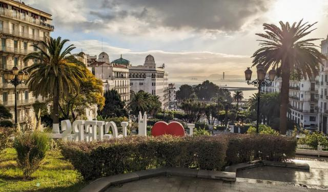
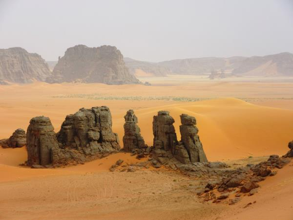
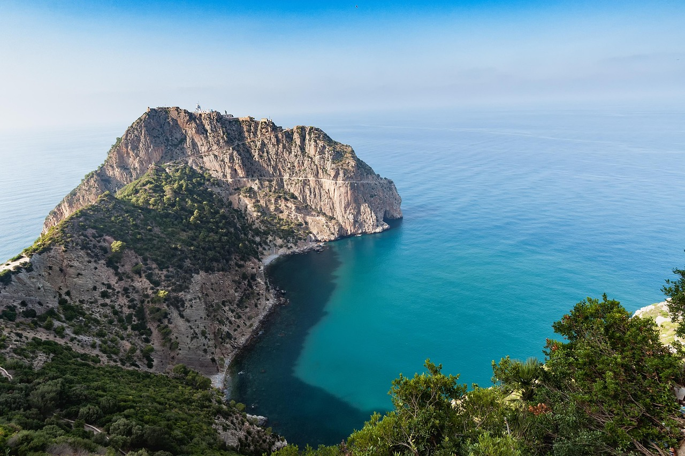

Algiers
Algiers is the capital city. It's known for its white buildings and the historic Casbah.
- Casbah
- Martyrs' Memorial
- Botanical Garden

Sahara Desert
The Sahara Desert covers most of southern Algeria. It’s famous for its sand dunes, oases, and ancient towns like Timimoun and Djanet.
- Timimoun (Red Oasis)
- Djanet & Tassili n'Ajjer
- Camel Trekking Adventures

Bejaia
Bejaia is a coastal city in northeastern Algeria known for its mountains and beaches. It's a popular tourist destination.
- Yemma Gouraya Mountain
- Cap Carbon Lighthouse
- Plage de Saket